Tetris on FPGA with SoC
SystemVerilog • MicroBlaze • USB Input • HDMI Video • Audio
ECE 385 Digital Systems Laboratory · Spring 2025
Project Overview
For my ECE 385 final project at the University of Illinois Urbana-Champaign, I built a playable Tetris-style game on the RealDigital Urbana FPGA development board. The design combines custom SystemVerilog game logic with a MicroBlaze softcore processor for USB keyboard input, an HDMI video pipeline, and an FPGA-generated audio output.
My goal was to bring together the major elements of a real-time digital system: accepting user input, maintaining game state, rendering graphics every frame, and producing audio. I used the AMD Spartan-7 XC7S50 FPGA on the Urbana board. Rather than running the entire game as software on the processor, the game-state updates and video color mapping were implemented in hardware; the processor primarily supported the USB host interface.
Six tetromino shapes were implemented along with block movement, rotation, collision detection, row clearing, a score display, and progressively faster falling. The final design also had two documented limitations: the T piece was not included because the chosen grid representation was resource-intensive, and pressing rotate during a piece's spawning sequence could occasionally produce a malformed block.
Project Report Source Repository
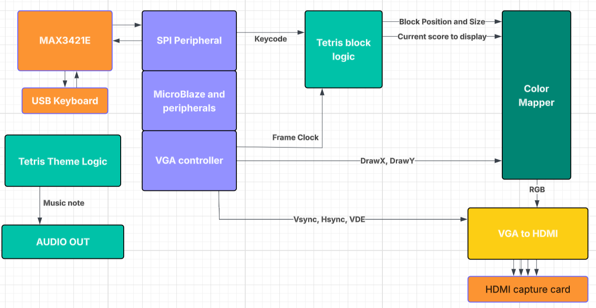
1. Architecture and Hardware/Software Partitioning
The system was organized into independent functional blocks. The MicroBlaze processor communicates with the on-board MAX3421E USB host controller over SPI and provides keyboard keycodes to the programmable logic. The game logic stores the active and settled pieces, interprets keycodes, and updates the board. A color-mapping module turns the game state and pixel coordinates into RGB values. Timing from the VGA controller is passed with those RGB signals to the HDMI-transmitter IP, while a separate music module generates the audio output.
Why split the design this way?
USB protocol handling is well suited to the processor and its driver/peripheral infrastructure. Grid updates, collision checks, and pixel color selection can be expressed as synchronous or combinational hardware. Keeping those responsibilities separate allowed the game engine and rendering logic to operate independently of the USB software path while sharing a compact keycode interface.
The main modules described in my report were mb_usb_hdmi_top.sv (system integration), Block.sv (game-state logic), Color_mapper.sv (pixel colors and text), TetrisTheme.sv (audio), VGA_controller.sv (video timing), and font_rom.sv (8×16 character bitmaps). The design also instantiated the MicroBlaze block diagram, clocking wizard, and HDMI-transmitter IP.
2. Choosing a Grid-Based Game-State Representation
A key early decision was how to represent the Tetris field in SystemVerilog. I chose a two-dimensional array with 10 columns and 22 rows. Only 20 rows are shown on screen; the additional two rows provide space above the visible field to spawn pieces before they enter the play area.
logic [2:0] play_area [10][22];
// 10 columns; 22 internal rows; 3 bits per cellEach three-bit cell stores one of eight values. Zero represents an empty cell, one represents a settled block, and values two through seven identify the six supported moving shapes. The same data drives gameplay decisions and the on-screen color mapping.
| Cell value | Meaning | Rendered color |
|---|---|---|
| 0 | Empty cell | Black |
| 1 | Settled / locked cell | Gray |
| 2 | Square (O) piece | Yellow |
| 3 | Line (I) piece | Light blue |
| 4 | S piece | Green |
| 5 | Z piece | Red |
| 6 | L piece | Orange |
| 7 | J piece | Dark blue |
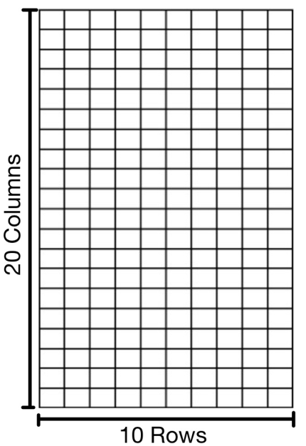
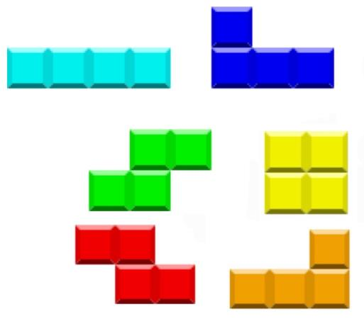
The advantage of this scheme was simplicity: collision tests, movement updates, and rendering all examined the same array. The cost was hardware utilization. Making each cell carry both occupancy and piece identity, and manipulating the grid across many conditions, produced a relatively large synthesized logic network. That tradeoff ultimately limited the addition of the seventh piece.
3. Gameplay Logic: Movement, Rotation, and Row Clearing
Spawning and gravity
The game selects a new shape and writes its occupied cells into the upper part of the array. A periodic movement event then attempts to move the active piece down by one row. The report describes an initial fall interval of approximately one half-second, with the speed increasing after completed lines. Updates were coordinated with the display frame timing.
Before any downward movement, the logic checks the cells immediately below the active piece. Motion is rejected if a destination is outside the field or occupied by an unrelated cell. When a piece can no longer descend, its cells are converted to the settled value of one, and the next shape is generated.
Keyboard controls
| Key | Game operation | Hardware behavior |
|---|---|---|
| A | Move left | Check the neighboring left-hand cells, then update piece coordinates if valid. |
| D | Move right | Perform the corresponding boundary/collision test and shift right. |
| W | Rotate | Change the active piece's cell offsets around its selected pivot. |
| S | Hard drop | Advance the piece rapidly until it reaches an occupied cell or the floor. |
Rotation using a pivot
Rotation required more than moving a block horizontally or vertically, because each piece contains multiple cells. I assigned a pivot to each shape and expressed the remaining cells as offsets from that point. For the horizontal line piece, for example, positions can be represented as (x,y), (x+1,y), (x+2,y), and (x+3,y). Rotating the line piece replaces those horizontal offsets with a vertical set and updates the pivot as needed for the next rotation.
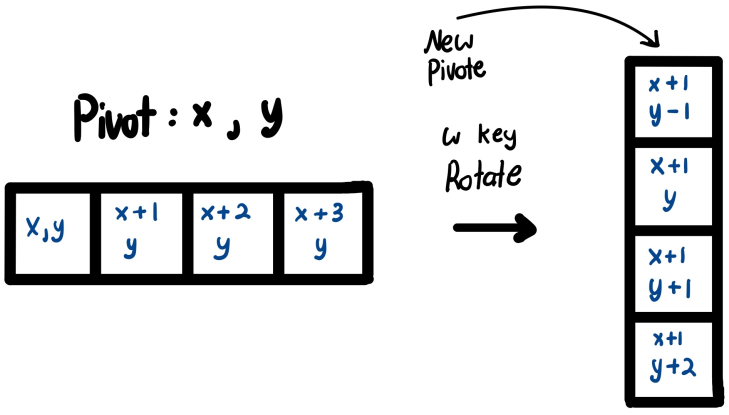
Clearing lines and updating the score
After a piece locks, the logic checks rows to find those whose cells are all settled. When a full row is detected, the score is incremented and the rows above it shift downward by one position. This creates the core feedback loop of the game: placing pieces changes the board, completing rows clears space, and progress increases the falling speed.
4. USB Keyboard Input with MicroBlaze and SPI
The RealDigital Urbana board includes a MAX3421E USB host controller. Instead of implementing USB host protocol handling entirely in SystemVerilog, I reused and adapted the MicroBlaze-based USB setup developed during the course. MicroBlaze communicates with the MAX3421E through an SPI interface, and the software-side USB handling makes keycodes available to the game logic.
At the hardware level, SPI uses MOSI, MISO, SCLK, and chip-select signals. At the game level, the interface was intentionally simpler: an 8-bit keycode input to Block.sv. This separation meant the keyboard interface could be handled on the SoC side without making the piece-movement state machine responsible for USB transactions.
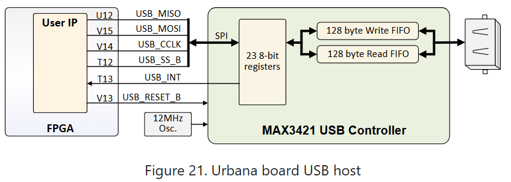
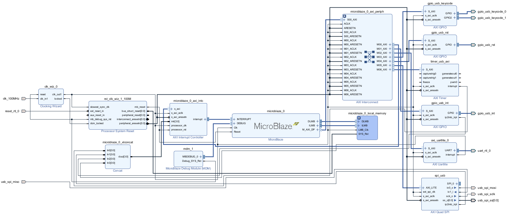
5. Video Generation: VGA Timing to HDMI Output
The display pipeline was another major integration task. A VGA controller generates horizontal synchronization (hsync), vertical synchronization (vsync), the active-video signal, and pixel coordinates DrawX and DrawY. These pixel coordinates allow the color mapper to decide whether the current pixel is part of the playfield, a tetromino, or on-screen text.
In my implementation, the visible playfield spans approximately x = 240–399 and y = 80–399. A cell occupies 16×16 pixels, so these bounds map to the 10×20 visible grid. The report's mapping expression selects the corresponding board cell:
grid[(DrawX - 240) >> 4][((DrawY - 80) >> 4) + 2]Subtracting the playfield origin converts absolute pixel coordinates to local coordinates. Right-shifting by four divides by 16 to determine the cell index. The additional row offset skips the two hidden spawn rows in the internal grid.
Each cell's three-bit value is converted into RGB color channels. Those RGB values, together with video timing signals, feed a VGA-to-HDMI transmitter IP core that generates the differential HDMI output signals. Using the VGA controller for pixel timing let the custom logic focus on the content of each pixel rather than implementing the HDMI physical signaling directly.
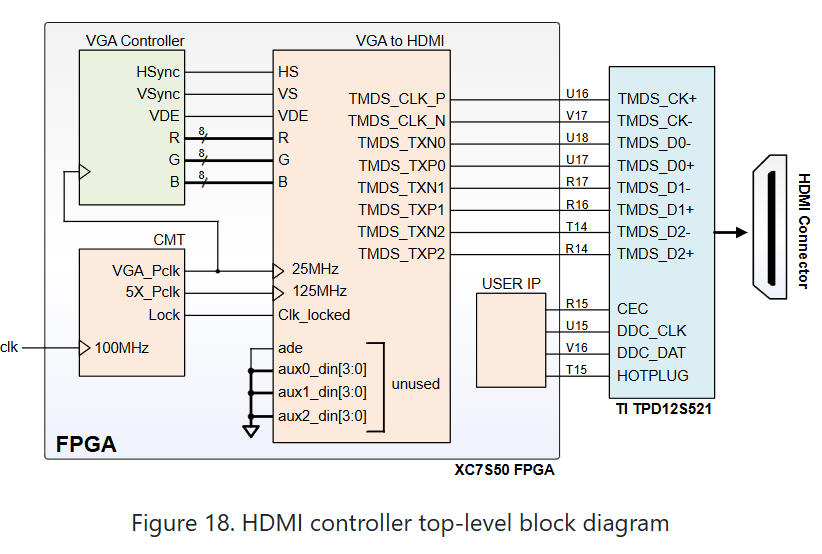
On-screen text and score
I also rendered static messages and the live line count. The text logic stores ASCII character codes and indexes an 8×16 font ROM. The character code selects a 16-row bitmap; the current pixel coordinate determines which row and bit of that bitmap should be drawn. For numerical output, the score is separated into decimal digits, converted to ASCII starting at 0x30, and passed through the same font lookup process.
6. Audio Output with a Clock Divider and Music ROM
Audio was an additional feature beyond the primary gameplay requirements. I designed a separate TetrisTheme.sv module to create a sequence of pitched digital waveforms through the Urbana board's audio output rather than using a stored audio recording.
A clock/counter arrangement advances through a music ROM, whose entries encode note and octave information. The module decodes the entry into a pitch selection and toggles its output after a computed delay. A zero-valued ROM entry produces silence. The resulting waveform is routed to the board's left and right auxiliary audio output pins.
This approach kept audio synthesis inside the FPGA design and introduced a separate timing problem: each note needed an appropriate pitch and duration while the rest of the game continued to operate. The project report notes that the music ROM content was adapted from an existing publicly available project; my implementation focused on the FPGA waveform-generation and integration logic.
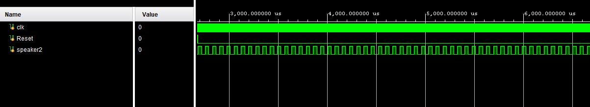
7. Functional Verification and Design Analysis
I used digital simulation to verify expected changes to the playfield before demonstrating the implemented system on hardware. The report includes signal-level traces showing pieces falling, locking into settled cells, generating subsequent shapes, and responding to keyboard inputs.
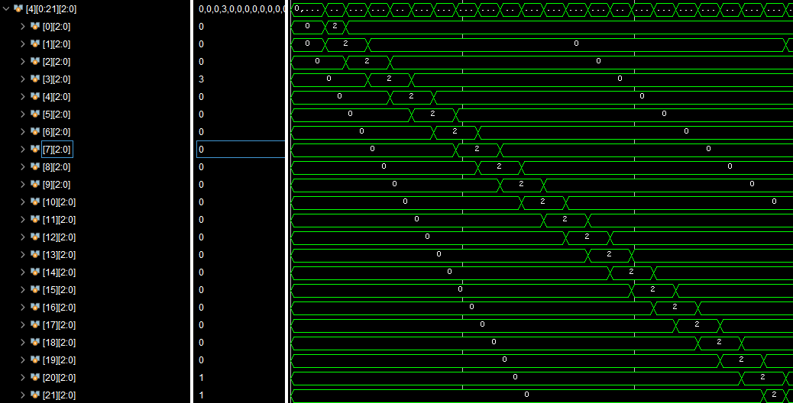
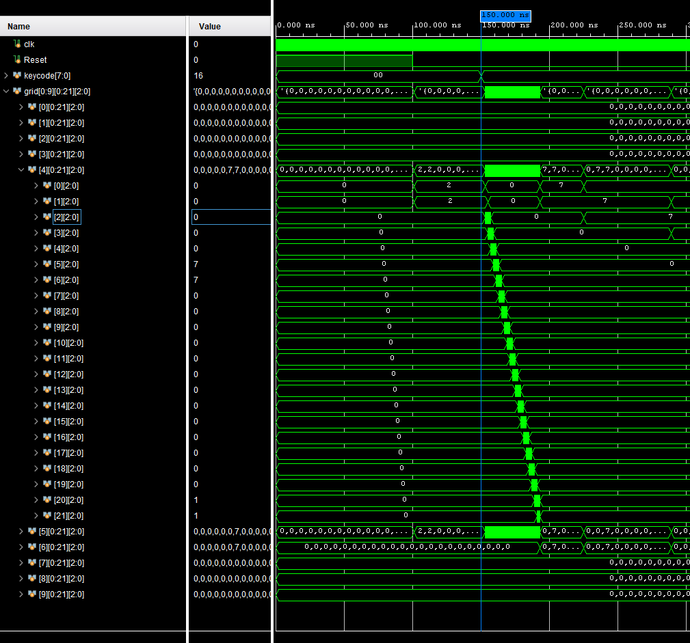
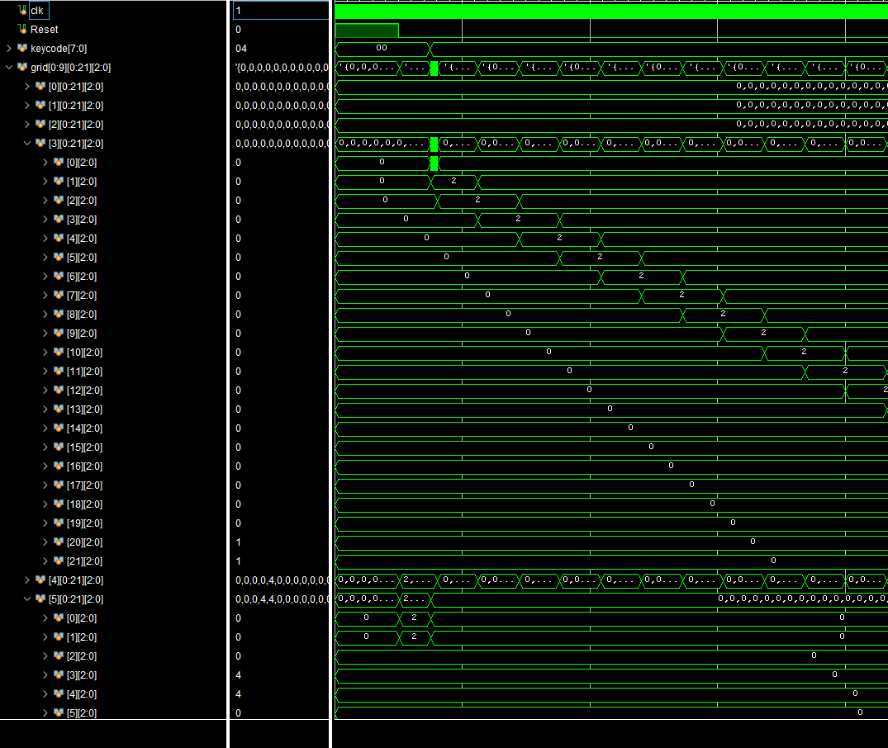
Resource and power analysis
My report's implementation summary listed the following utilization and power estimates. These figures are reproduced as reported; the maximum-frequency number is a tool-analysis result, not the HDMI pixel-clock frequency.
| Report metric | Reported value |
|---|---|
| Lookup tables (LUTs) | 29,978 |
| Flip-flops | 3,485 |
| Block RAM | 32 |
| DSP blocks | 3 |
| Latches | 0 |
| Reported timing-analysis frequency | 119.7MHz |
| Estimated static power | 0.075W |
| Estimated dynamic power | 0.661W |
| Estimated total power | 0.736W |
The resource numbers above are taken from the Spring 2025 project report. A future update could pair them with a fresh Vivado utilization report for the archived build, including device capacity and synthesis settings.
8. Limitations, Debugging, and Lessons Learned
The missing T piece and logic utilization
The finished game included six tetromino types rather than all seven. My three-bit-per-cell representation used all eight possible values for empty cells, locked cells, and the six implemented pieces. Adding a seventh shape with a distinct code would require a different encoding or widening each cell to four bits. In the original design, widening the grid caused implementation to exceed the available FPGA resources.
That result exposed the cost of the initial representation: it was easy to write and reason about, but did not scale efficiently. A better version could separate occupancy from piece identity, store settled cells more compactly, or represent the moving tetromino with a small set of coordinates rather than rewriting a wide 2D state array. Those are proposed improvements, not features of the final submitted build.
Rotation during spawning
I also observed an intermittent glitch when pressing the rotate key just as a new piece was generated. In some cases, the new piece appeared with a missing or misplaced cell. I reproduced the behavior by repeatedly pressing W after the previous piece settled. This suggested an interaction between rotation and piece-generation logic that would benefit from clearer state sequencing and input gating.
Potential improvements
Beyond resolving the spawn/rotation race and reducing LUT use, I would improve the visual presentation using a framebuffer or sprite-based rendering approach. That would support more detailed graphics and text than the original combinational color mapper and font ROM.
Main engineering takeaway
This project helped me understand that digital design is not only about making the logic function correctly. Choices in state representation, module boundaries, clocking, and hardware/software partitioning determine whether a design is practical on a real FPGA. The T-piece limitation and the sporadic rotation glitch were useful examples of issues that only become clear once functionality, timing, and device-resource constraints are considered together.
Project Files and References
Read the full ECE 385 project report · View the source repository on GitHub
All technical figures displayed above were extracted from my original project report. The existing project photographs on my site can be added alongside these diagrams without changing the technical text.